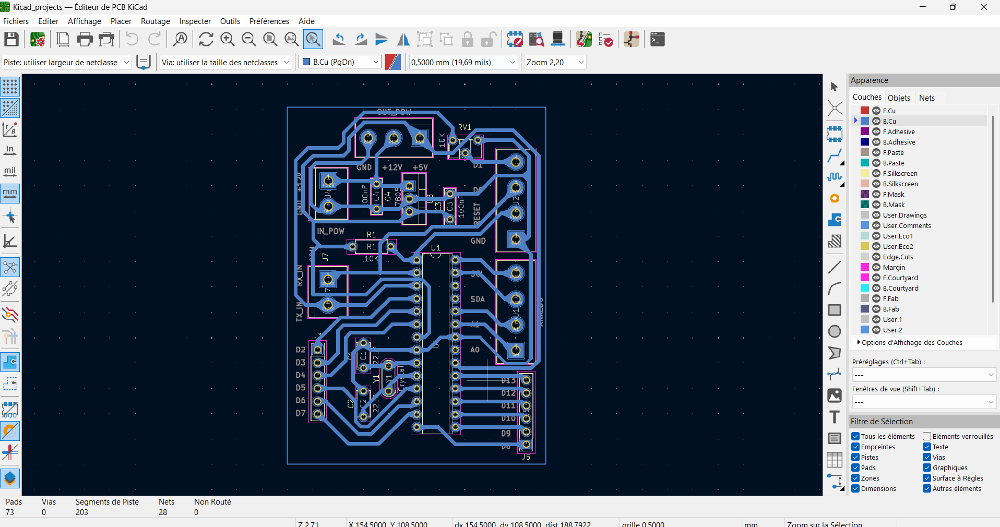

Test final : Convoyeur intelligent de tri des déchets
Pour un assainissement de notre cadre de vie et pour la protection de notre environnement afin de lutter contre les phénomènes de changements et réchauffement climatiques, la gestion des déchets devient une des priorités qu’il urge d’améliorer. C’est ce qui pousse à penser à une automatisation du tri de déchets, autrefois réalisé par l’homme, afin de gagner du temps et de réduire la contraction de certaines maladies.
Objectif du projet
Nous venons donc sur l’objectif du test final qui est de réaliser un convoyeur intelligent capable de trier un certain nombre de déchets (ici quatre). Face à cela, nous matérialiserons les déchets par des cubes colorés afin de pouvoir réaliser un simple tri basé sur la couleur. Ce projet allie mécanique, électronique embarquée et communication IoT et donc le secteur informatique.
1ère étape : L'avant-projet (étape de réflexion de la faisabilité)
Durant cette phase, on a fait une analyse sur les besoins réels du test et le problème à résoudre. On a exploré les différentes options de réalisations possibles, les contraintes et des solutions pour y arriver.
Durant cette phase, il fallait vraiment se focaliser sur l’objectif visé : réaliser un convoyeur intelligent doté de capteurs, d’actionneurs et d’une interface Web accessible sur laquelle se fera le compte des déchets triés.
On en est arrivé à finalement se décider sur cette maquette de convoyeur que la documentation mécanique vous donnera plus d’informations.

Pour ce qui est de ce document, on se servira juste des apports de la partie mécanique pour vous détailler notre parcours en électronique.
Cette modélisation est le fruit d’une longue réflexion. Notre convoyeur a été pensé ainsi :
- Au repos du système, le tapis du convoyeur est au repos.
- La détection de déchet sur le tapis entraîne sa mise en marche.
- Le tapis l’entraîne jusqu’à la zone de détection de sa couleur. On a prévu que lorsque le déchet s’approche de la zone de détection de couleur, que le tapis ralentisse pour faciliter une meilleure détection de la couleur.
- Après la détection de couleur, cette info doit être perçu sur notre interface Web sans oublier des messages depuis le début sur un écran pour un meilleur débogage.
- Après cette étape, notre déchet doit être drainé par notre tapis pour être expulsé hors du tapis.
- Notre tapis passe alors au repos s’il n’y a pas de déchet détecté.
Un problème rencontré au cours de ce test a été vraiment le choix du moteur d’entrainement du tapis et de l’alimentation adaptée, dont on a trouvé une solution. On vous en parlera plus dans la suite.
Après avoir défini les objectifs généraux du système et précisé les contraintes techniques, il convient de passer à la phase d’initialisation où on sélectionnera les composants essentiels, garants de la fonctionnalité, de la fiabilité du système.
2ème étape : L’initialisation (le choix des composants)
Pour le bon fonctionnement de notre convoyeur, il a été question de sélectionner des composants fiables et complémentaires, adaptés aux exigences de tri automatisé des déchets, notamment :
a. Le capteur de couleur TCS-34725 :
C’est un capteur optique numérique qui mesure les couleurs RVB et claires, c’est-à-dire l’intensité de la lumière rouge, verte, bleue et claire.

Contrairement à d'autres capteurs plus basiques, celui-ci offre une plus grande précision et une plus grande facilité d'utilisation grâce à sa sortie numérique et sa capacité à communiquer via I2C.
Il intègre également un filtre infrarouge (IR), qui améliore la qualité des mesures dans des conditions de lumière ambiante, en éliminant une partie du bruit susceptible de fausser les résultats. Grâce à son convertisseur analogique-numérique ADC 16 bits, la mesure est très précise.
Dans notre système, c’est lui qui sera chargé lors du passage du déchet, de détecter la couleur du déchet.
b. La diode Laser KY-008 (émettrice de rayon) :
La diode laser est une petite diode semi-conductrice qui émet physiquement un rayonnement. Cette diode est directement pompée avec un courant électrique qui crée des conditions de laser à la jonction de la diode. Ils peuvent donc transformer l’énergie électrique directement en lumière.
La configuration des broches du module laser KY-008 est illustrée ci-dessous. Ce module comprend trois broches qui sont expliquées ci-dessous.

- Broche 1 (S): il s’agit de la broche de signal du module qui contrôle l’état de la diode laser (éteint ou allumé).
- Broche 2 (5V) : il s’agit d’une broche pour alimenter la diode laser
- Broche 3 (GND) : Il s’agit de la broche 0V du module, la masse.
Ce module est chargé d’émettre continuellement le faisceau laser, tant qu’elle est alimentée, sur une photorésistance et c’est l’interruption de ce faisceau qui démarre le système du convoyeur.
c. La photorésistance :
Une photorésistance est un dispositif semi-conducteur qui diminue sa résistance électrique lorsqu’il est exposé à la lumière.

C’est notre photorésistance qui sera, tout le temps, éclairée par le faisceau de notre diode laser et qui, non éclairée voudra signifier à notre système la présence de déchet au niveau de notre tapis et donc son démarrage.
d. Le microcontrôleur ATMEGA328-P :
L'ATMEGA328-P est un microcontrôleur AVR 8 bits connu pour sa combinaison équilibrée de performances, d'efficacité énergétique et de facilité d'utilisation. Il dispose d'une large gamme de périphériques et d'interfaces, ce qui le rend adapté à tout, du contrôle du moteur et de l'acquisition de données à l'électronique grand public et au prototypage.

Il représente le cerveau de notre système. C’est à lui de récupérer des informations des capteurs comme la nature de la couleur et de le transmettre à une carte ESP8266 via communication UART, chargée de faire le pont entre la partie électronique et l’interface Web.
e. La carte ESP8266 :
Les utilisateurs de notre convoyeur ont le droit de savoir comment évoluent le transport des déchets, si les déchets de différentes natures ne se mélangent pas, et ce de n’importe où et à n’importe quel moment. Notre équipe a donc fait le choix du module de communication intégrant le microcontrôleur ESP8266 pour collecter les informations au niveau du système de notre convoyeur et les envoyer vers une interface Web dynamique et accessible à qui le veut.
C’est un circuit avec développé par la société chinoise, Espressif Systems, qui fonctionne naturellement avec Internet.

On peut se servir du module pour :
- Créer un serveur Web, pour visualiser les données d'un capteur sur un téléphone mobile ou un ordinateur via le navigateur Web ou bien pour lui envoyer des commandes comme fermer la porte du garage ou arroser les plantes
- Communiquer avec un serveur Web, pour envoyer ou recevoir des données sur le Web, à partir d'un site.
- Créer un réseau maillé, où chaque module envoie et reçoit des informations des autres.
- Créer des connexions sans fils, et donc envoyer et recevoir des informations par le Wi-Fi en passant par d'autres méthodes que le navigateur Web, par communications UDP/TCP/OSC.
Mais pour notre système, afin de rendre notre site accessible à tout administrateur pour la visualisation du compte de déchets triés, on a opté pour sa deuxième utilité précédemment mentionnée : communiquer avec un serveur Web en y envoyant et recevant des données. Nous avons opté ici pour la configuration d’une base de données Firebase, où toutes les infos y sont mises pour que notre interface puisse y lire et afficher.
En résumé, notre carte ESP8266 sera chargée de mettre à jour notre base de données en temps réel pour le compte des différents déchets triés après avoir bien reçu ces informations de notre microcontrôleur ATMEGA328-P qui ne communiqueront que par liaison Série ou encore appelée UART (Universal Asynchronous Receiver-Transmitter).
f. Le capteur à ultrasons HC-SR04 :
Les capteurs à ultrasons sont des dispositifs qui utilisent des fréquences audio pour la détection de présence et/ou pour calculer la distance d'un objet distant. Le terme ultrasons fait référence à des fréquences audio qui se situent en dehors de la gamme d'audition humaine (20 kHz).


Pour notre système, on a prévu l’utiliser en fin de tapis. Vous vous demandez pourquoi, n’est-ce pas ?? Pendant que notre tapis conduit notre déchet après la détection, comment peut-on savoir que ce dernier s’approche de la fin ? Comment mettre fin à la rotation du moteur si le déchet atteint la fin du convoyeur ? C’est là qu’intervient le capteur à ultrasons HC-SR04. Il pourra surveiller l’approche de la fin d’un déchet en balayant une zone proche de la fin du convoyeur, ce qui mettra donc fin à l’avancée du tapis (soit à l’arrêt du moteur).
g. La LED RGB
La LED RGB (ou Light-Emitting Diode Red-Green-Blue) est un composant électronique polyvalent capables d’émettre une large gamme de couleurs en combinant les trois couleurs : rouge, vert et bleu.

h. L’écran LCD I2C :
Un afficheur LCD (Liquid Crystal Display) est un dispositif d’affichage dont l’écran est principalement composé de cristaux liquides qui sont des molécules organiques qui peuvent être alignées pour bloquer ou laisser passer la lumière par contrôle électrique. Les afficheurs LCD utilisent cette propriété pour afficher des textes ou caractères. Le terme I2C accompagnant le nom de notre dispositif est très significatif. Il signifie que ce type d’afficheur communique uniquement par deux broches SDA et SCL grâce à un module de simplification qui lui est rattaché, ce qui réduit le nombre de broches, initialement à seize, à quatre (car il a aussi besoin de 2 autres broches pour l’alimenter) !
Dans notre système, il servira à afficher des messages claires et simples pour surveiller en présentiel le fonctionnement de notre convoyeur.
i. Le moteur :
Pour entrainer notre tapis, on a opté pour un moteur pouvant délivrer un couple nécessaire pour le faire tourner. On était parti au départ sur un moteur pas à pas mais pour quelques problèmes de réalisation rencontrés pendant les tests, nous nous sommes entendus pour l’utilisation du moteur à engrenages modèle XD37GB-555YSY d’une tension nominale de12V et d’une rotation maximale de 200 RPM.


j. Le driver L298N :
Le composant L298N est un circuit intégré de chez STMicroelectronics. Elle contient essentiellement :
- 2 ponts en H, permettant de piloter chacun 1 moteur électrique DC (dans un sens, ou dans l’autre)
- Et une commande logique à de faible intensité, pour piloter des moteurs à « fort courant »


Le L298N est simplement un « double étage de puissance », permettant de commander directement deux moteurs électriques, via des commandes logiques « basse puissance ». C’est donc le composant idéal pour aisément contrôler le sens et la vitesse de rotation du moteur à courant continu que nous voulons utiliser pour notre convoyeur.
k. L’alimentation :
Comme nous le savons tous, on ne peut pas parler de composants électroniques sans parler de la source d’alimentation !
Pour cette section, nous avons fait le choix d’une batterie adaptée pour notre système : la batterie LiPo 12800mAh 7.4 VDC avec son chargeur accompagné de son propre chargeur, avec un amplificateur de tension, le module XL6009, pour obtenir une alimentation de 12 VDC.

| Composant | Rôle | Communication |
|---|---|---|
| ATMEGA328-P | Cerveau du système | UART vers ESP8266 |
| ESP8266 | Communication IoT | WiFi vers interface web |
| HC-SR04 | Détection fin de convoyeur | Signal numérique |
Réalisation du projet
3ème étape : La planification des tâches
Pour cette étape, il fallait diviser les différentes équipes pour exécuter des tâches nécessaires pour le test:
- Une, pour étudier chaque composant, du rôle jusqu’à un essai sur une platine d’essai ;
- Une autre pour l’étude du fonctionnement du convoyeur ;
- Et une autre chargée de recueillir les résultats de chaque équipe pour l’écriture du code pour notre convoyeur.
Ce travail à la chaine nous a permis de gagner en temps et en efficacité. C’est après cela que l’on a pu fabriquer notre circuit imprimé et ainsi poursuivre notre réalisation.
4ème étape : L’exécution (la réalisation) :
Pour la conception du circuit électronique, nous avons opté pour la réalisation d’un PCB pour faciliter la mise en place et la soudure des composants.
D’abord, nous nous sommes occupés de la conception CAO de notre système de commande faisant office de carte Arduino dont le cerveau est l’ATMEGA328-P. Ci-dessous se présente la schématique de ce système sous KiCAD :

Nous avons prévu des borniers pour les broches I/O de l’ATMEGA328-P, pour les alimentations d’entrée et de sortie, pour certaines broches analogiques (celles dont on a besoin), et pour les broches de communication (SDA, RX, SCL, etc.). Pour l’alimentation d’entrée du circuit, nous avons exigés une tension de 12V, nous allons nous en servir pour obtenir une tension de 5V par régulation pour alimenter le circuit de contrôle. Concernant les broches RX et TX, nous en avons besoin : d’une part pour la réception du code par FTDI, d’autre part pour la communication avec la carte ESP8266. Voilà donc une petite explication de notre schématique.
Ensuite, nous nous sommes tournés vers la conception du PCB sous KiCAD. Elle s’illustre par l’image suivante :

Le PCB ci-dessus a une dimension de 51 x 71 mm, les pistes de liaisons ont une épaisseur de 0,7 mm pour éviter les problèmes de conception, la grande majorité des pastilles des composants ont été grossis pour une soudure plus aisée, les broches des borniers ou connecteurs ont été annotés pour permettre une utilisation plus facile de celles-ci. Information importante, le PCB utilisé est un simple en raison de la nature des composants électroniques utilisés (des composants THT) et des équipements à notre disposition. Pour avons fait une capture d’écran du circuit imprimé en 3D pour avoir un aperçu proche de la réalité de notre système :
Caractéristiques du PCB :
- Dimensions : 51 x 71 mm
- Alimentation : 12V entrée, 5V régulé
- Broches I/O pour ATMEGA328-P
- Connecteurs pour communication UART
5ème étape : Le test
Pour les différents tests, on a pu réaliser les tests pour vérifier si nos composants fonctionnaient. Il s’agit des tests sur les composants comme : le fonctionnement adéquat de la diode laser et de la photorésistance, celle du capteur de couleur, celle du moteur à courant continu, celle du transfert réel de la carte Arduino à l’ESP8266 et de la mise à jour en temps réel sur l’interface sans oublier celui du capteur ultrason et de la diode RGB.
On a pu ainsi facilement reconstituer le tout pour notre challenge : réussir à faire notre convoyeur.
Donc on a fait des tests sur ces différents composants :
- Fonctionnement diode laser et photorésistance
- Détection précise des couleurs
- Contrôle du moteur à courant continu
- Communication Arduino vers ESP8266
- Mise à jour en temps réel de l'interface web
Explication du code
Structure générale
Le code principal est divisé en plusieurs parties :
- Initialisation des capteurs et périphériques
- Boucle principale de détection et contrôle
- Communication avec l'ESP8266
- Gestion des événements (détection, tri, etc.)
Bibliothèques utilisées
#include "Adafruit_TCS34725.h" // Capteur couleur
#include <LiquidCrystal_I2C.h> // Ecran LCD
#include <ESP8266WiFi.h> // Communication WiFi
Fonctionnement principal
// 1. Vérifier présence déchet
if (detecter_dechet()) {
activer_moteur();
// 2. Détection couleur
uint16_t couleur = lire_couleur();
// 3. Transmission données
envoyer_donnees(couleur);
// 4. Attendre expulsion
attendre_expulsion();
arreter_moteur();
}
}
Conclusion
Résultats obtenus
Le convoyeur intelligent permet :
- Une détection fiable des déchets par interruption laser
- Une identification précise des couleurs
- Un tri automatisé avec comptage en temps réel
- Une visualisation des données via interface web
Ce projet démontre la faisabilité d'un système automatisé de tri des déchets, combinant mécanique, électronique et IoT pour une gestion plus efficace des déchets et une réduction de l'impact environnemental.
Vidéo de démonstration

Cliquez pour voir la démonstration du convoyeur en action